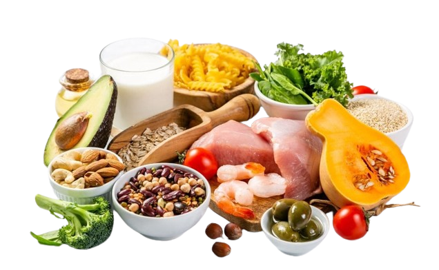

Prós e Contras da Dieta Dash
Prós:
- Melhora a saúde cardiovascular.
- Incentiva alimentos ricos em nutrientes.
- Reduz a ingestão de sódio.
- Pode promover a perda de peso.
- Oferece flexibilidade na escolha de alimentos.
Contras:
- Pode ser restritiva devido à redução de sódio.
- Desafia a mudança de hábitos alimentares.
- Pode ser mais custosa devido à ênfase em alimentos frescos.
- Exige planejamento e preparação de refeições.
- Pode parecer menos saborosa devido à restrição de sódio.

Receitas Mediterrâneas
Escolha uma receita no menu abaixo: